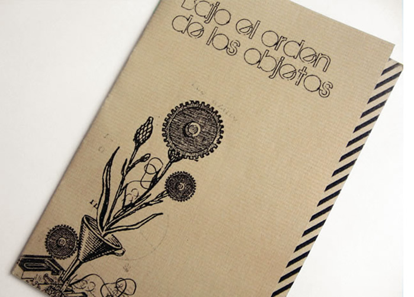
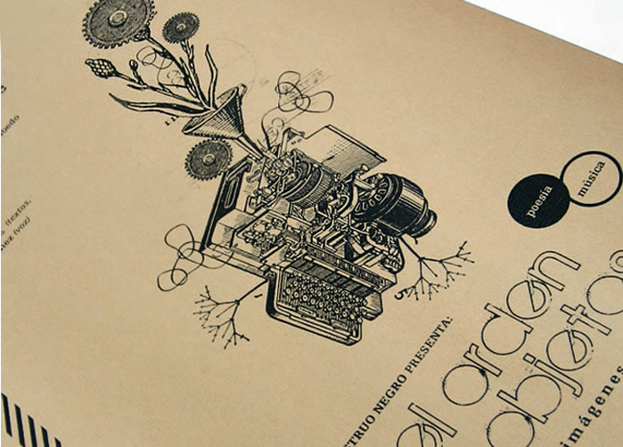
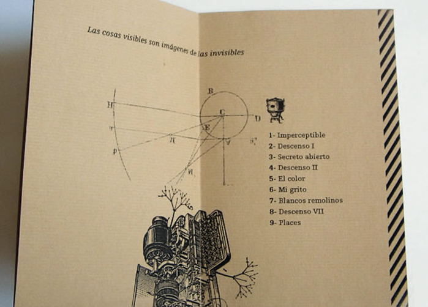
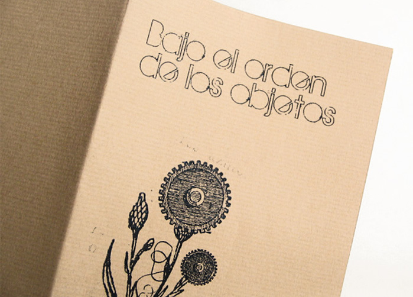
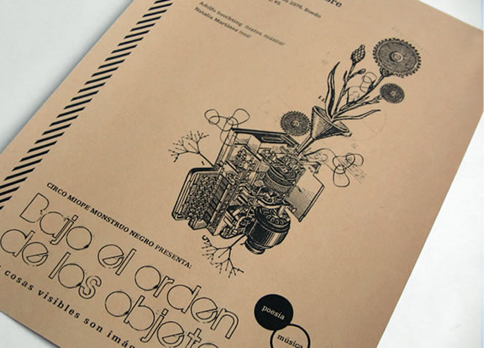

_Bajo el orden de los objetos Invitación, programa de ciclo de música y poesía, tapa. Alfredo Soechting. Buenos Aires
_Bajo el orden de los objetos Afiche A4 de ciclo de música y poesía. Alfredo Soechting. Buenos Aires
_Bajo el orden de los objetos Invitación, programa de ciclo de música y poesía, detalle interior. Alfredo Soechting. Buenos Aires
_Bajo el orden de los objetos> Invitación, programa de ciclo de música y poesía, tapa. Alfredo Soechting. Buenos Airesl
_Bajo el orden de los objetos Afiche A4 de ciclo de música y poesía. Alfredo Soechting. Buenos Aires